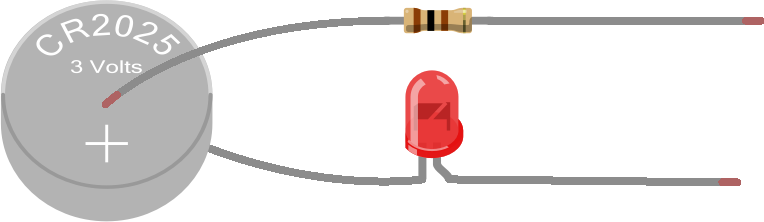
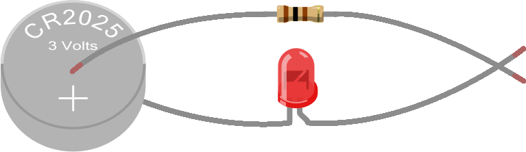

Hardware is a fancy name for electronic components. Typically, we refer to a very big circuit or an entire device (like a whole computer) as hardware, but in reality, even just a single electronic component is also considered hardware.
To build the hardware for this project, we'll need the following three components (all provided in the bag marked Your First Circuit Ready Set STEM Cell), and shown at the top of this page:
3 Volt Battery. Inside it's own plastic bag is a round flat battery that we'll be using for the next couple projects.
100 Ohm Resistor. There are several resistors in the bag that look similar to the one shown at the top of this page (that funky symbol after the number 100 is referred to as "Ohm"). We'll talk more about the differences between the resistors in an upcoming tutorial, but for now, you want one of the resistors that has the color bands shown in the picture above (there are four of these exact colored resistors in the bag).
Red LED. There are two red LEDs in the bag. We'll need one of them for this project.
Okay, let's give this a try, step-by-step...
Connect the Resistor and LED to the Battery
Using your fingers, pinch one lead of the resistor (the "leads" are the metal wires on either side) to the positive (+) side of the battery and pinch the shorter lead of the LED (one of the leads is longer than the other) to the other side of the battery (we refer to this as the "negative" side).
Like this:

Touch the Other Leads of the Resistor and LED Together
Using your free hand, touch the other leads of the resistor and LED together, as indicated below:
At this point, the LED should be lit, like this:

Congratulations...you just built your first electric circuit!
An important concept to understand about LEDs is that they are "unidirectional" — in other words, they only allow electric current to flow in one direction. If you hook up the LED backwards — in the way that electric current won't be allowed to flow through it — it will not illuminate and no current will flow through any of the circuit (remember, if electric current isn't flowing at a point in the circuit, it's not going to be flowing anywhere in the circuit).
There are three ways to determine the correct way to orient the LED:
-
Look at the leads (the metal legs on either side of the LED). One is going to be a bit longer than the other. For the LED to work correctly, the longer lead should be closest to the power source and the shorter lead should be closest to ground.
-
There is a raised ridge that runs around the base of the LED bulb. That ridge is flattened on one side of the bulb. The side of the bulb where the ridge is flattened should be facing closer to the ground than to power in the circuit.
-
Just hook it up one way and hope you get lucky! If that doesn't work, reverse it. Keep in mind that if there are other issues with your circuit, it's possible that the LED won't illuminate in either case, and you still won't know if the LED is oriented correctly. If that happens, we suggest reverting back to #1 or #2 to ensure the LED is oriented correctly so you can rule that out as a possible problem in your circuit.
You'll notice that if you remove the resistor from the circuit above and attach the LED directly to the battery, the LED still lights. Which means you're probably wondering why we need the resistor at all?
Often, electronic components can only handle certain maximum voltages and/or currents. In general, the manufacturer of the component does a bunch of testing to determine how much voltage and/or current the part can handle before it's at risk of being damaged or working improperly. When a power supply puts out more voltage/current than the part can handle, a resistor in the circuit can reduce the voltage/current to ensure the part isn't damaged and works properly.
In this particular circuit, we use the resistor to reduce the amount of electric current flowing through the circuit so that the LED doesn't break. While having (or not having) the resistor in this circuit won't make much of a difference, when using other power sources — like we'll be doing in future projects — ensuring we use the proper resistance in the circuit is much more important.
Sometimes your circuit won't work and you just can't figure out the problem. When this happens, it's a good idea to verify that wires and components aren't touching each other in places where you don't intend them to ("a short circuit"). Electric current flowing through a circuit is going to look for the easiest way to get to the lowest point of voltage (usually ground), and sometimes — if wires or components are touching where you don't expect them to — you may be inadvertently creating a new path for electric current to flow and that electric current may be traveling in ways that bypass your components and give you unexpected results.